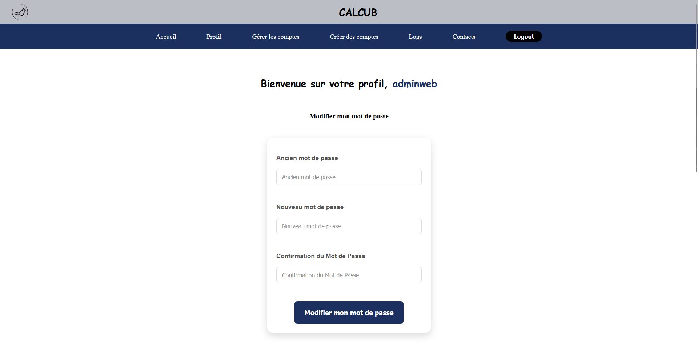

Projets
Des réalisations concrètes et utiles
Une sélection de projets pour montrer ma progression et mes domaines forts.
Mes Projets
Vous pouvez trouver certains de mes projets sur mon GitHub : juste ici
- Installation et configuration de postes de travail sous Linux
- Développement d'un jeu en Java
- Création et gestion d'une BD, analyse de données avec Excel et Oracle SQL
- Conception et réalisation d'une plateforme web dynamique en HTML, CSS, PHP et JavaScript installé sur un RPi
- Plateforme web de calcul distribué connectée à un cluster de Raspberry Pi
Installation et configuration de postes de travail sous Linux
Ce projet consistait à préparer et configurer un poste de travail sous Linux en partant de zéro. Pour cela, j'ai d'abord créé une clé USB bootable avec une distribution Linux adaptée, puis j'ai procédé à l'installation complète du système sur le poste. Ensuite, j'ai mis en place un environnement de développement en installant les outils essentiels, dont Docker, permettant de gérer des conteneurs applicatifs pour des déploiements simplifiés et isolés. Enfin, j'ai effectué des configurations spécifiques du poste, incluant la gestion des utilisateurs, les réglages de sécurité et l'optimisation des performances du système.
Développement d'un jeu en Java
Ce projet consistait à réaliser un jeu interactif en Java. L'utilisateur pouvait choisir son scénario et avait pour objectif de replacer les cristaux dans leurs temples respectifs le plus rapidement possible. Dans ce projet, je devais également implémenter deux algorithmes spécifiques : le tri heuristique et le tri par sélection. Comme on peut le voir sur les images ci-dessous, j'ai implémenté un menu d'accueil lors du lancement du jeu afin d'accéder ensuite à l'interface du jeu.


Analyse de données avec Excel et Oracle SQL
Dans ce projet, j'ai conçu et géré une base de données Oracle SQL en respectant un modèle relationnel structuré. Une fois les données stockées et organisées, j'ai réalisé une analyse approfondie via des requêtes SQL complexes, permettant d'extraire des informations précises et pertinentes. L'analyse des données a ensuite été poussée plus loin avec Excel, en utilisant des tableaux croisés dynamiques et des formules avancées pour générer des visualisations claires et compréhensibles. Enfin, j'ai créé des graphiques complexes pour interpréter les tendances et assurer une vérification rigoureuse des résultats obtenus grâce aux requêtes SQL.
Conception et réalisation d'une plateforme web dynamique en HTML, CSS, PHP et JavaScript installé sur un RPi
Ce projet avait pour but de développer une plateforme web permettant d'effectuer divers calculs mathématiques et statistiques. Hébergée sur un serveur Apache/MySQL installé sur un Raspberry Pi, la plateforme prenait en charge différents utilisateurs : administrateurs et visiteurs.
- Un module de probabilités : mise en place de la loi inverse gaussienne.
- Un module de cryptographie : implémentation de l'algorithme RC4, permettant de chiffrer et déchiffrer des données.
- Un module polynôme : calcul des racines réelles et complexes d'un polynôme.
- Gestion des utilisateurs : les administrateurs pouvaient ajouter des utilisateurs via un fichier CSV et exporter les données sous le même format.
- Sécurisation et gestion des accès : mise en place d'un système de connexion avec gestion des rôles et suivi des logs pour assurer la traçabilité des actions.
L'ensemble du projet était versionné sur GitHub et suivi par un cahier des charges précis. La plateforme devait être fonctionnelle, ergonomique et offrir une interface fluide pour les utilisateurs.
Vous pouvez trouver ce projet et le télécharger juste ici : ici



Plateforme web de calcul distribué connectée à un cluster de Raspberry Pi
Projet réalisé en semestre 5 de 3ème année de BUT, cette plateforme avait pour objectif de proposer une interface web reliée à un cluster de Raspberry Pi afin d'exécuter des programmes de calcul distribué ou parallèle. L'application devait permettre de lancer des traitements, suivre leur avancement et consulter les résultats de manière claire, ergonomique et sécurisée.
Le projet distinguait plusieurs profils d'utilisateurs : visiteurs avec accès limité à l'accueil, utilisateurs inscrits capables de se connecter, lancer un programme, consulter leurs historiques et gérer leur mot de passe, administrateurs web chargés de la gestion des comptes et des programmes disponibles, et administrateurs système responsables de la supervision technique du cluster, du suivi des logs et de la maintenance de l'infrastructure.
Les fonctionnalités attendues incluaient une authentification sécurisée avec mots de passe chiffrés et CAPTCHA, le lancement de calculs distribués, le suivi des exécutions, l'affichage des résultats sous forme de tableaux ou de graphiques, ainsi qu'une journalisation des actions importantes comme les connexions, déconnexions, lancements de programmes et suppressions de comptes.
L'environnement technique reposait sur un cluster de 5 Raspberry Pi reliés en réseau local, composé d'un Raspberry Pi 4 et de quatre Raspberry Pi 0, avec un serveur web Apache, une base de données MySQL, et des programmes distribués développés en Python et en Java. Ce projet m'a permis de mobiliser des compétences en développement web full-stack, administration Linux, sécurisation SSH, gestion de logs, monitoring et programmation distribuée via MPI et sockets TCP.
Les priorités du projet allaient de la mise en place du cluster et des programmes de calcul jusqu'à la création de l'interface web, puis l'ajout de fonctions avancées comme l'historique, la gestion des utilisateurs, le monitoring du cluster et l'amélioration de l'UI/UX. Ce projet illustre bien ma capacité à travailler sur une solution complète, mêlant infrastructure, sécurité, back-end, front-end et exploitation d'un environnement distribué.